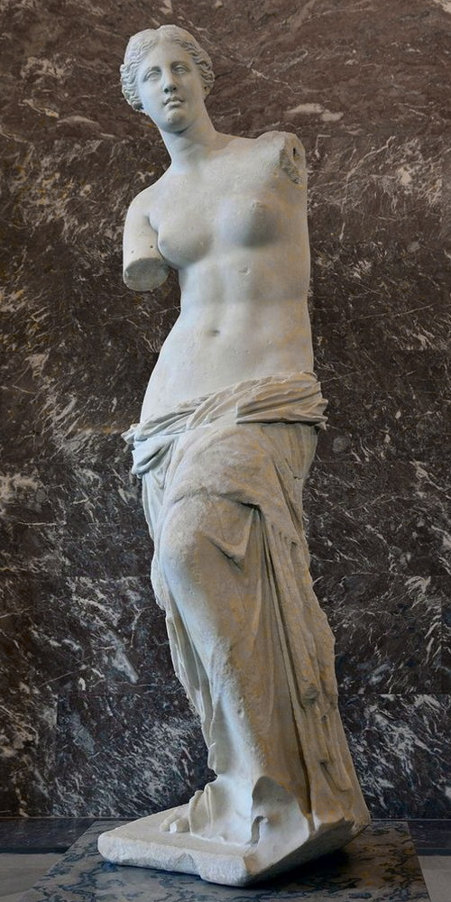

Искусство Древнего мира
Коллекция музея начала пополняться древностями с начала XIX века, благодаря активной работе
археологов в
Египте и на Ближнем Востоке. По сути это отдельный музей в музее, расположенный в крыле Сюли, Денон и
Ришелье. Самые древние экспонаты, найденные на территории Малой Азии (современная Турция) датируются седьмым
тысячелетием до нашей эры.
Искусство ислама
Коллекция этого отдела содержит произведения исламских цивилизаций Испании, Индии, Сирии, Персии.
Скульптуры
Богатая коллекция разных времен и народов. Изначально здесь были представлены лишь скульптуры Античности,
единственным исключением стали работы Микеланджело. Лишь в середине XIX века к коллекции присоединяются
статуи Средневековья и Возрождения.
Венера Милосская, статуя Афродиты из белого мрамора, главная знаменитость всей коллекции скульптур. Автор
этого шедевра по-прежнему неизвестен, но без рук, согласно легенде, она осталась уже в Новое время.
Ника Самофракийская — еще одна гордость музея. Мраморная скульптура богини победы. Неоднократно
знаменитые
мировые скульпторы пытались восстановить голову и руки, но они портили шедевр. Статуя теряла ощущение
легкости и полета.

Предметы искусства
Самая богатая, самая красивая и обширная коллекция музея. Старинная мебель, церковное искусство, драгоценности, гобелены, статуэтки, часы и многое другое.
Графическое искусств
Рисунки акварелью, углем и карандашом, гравюры по меди и иллюстрированные книги. До этих залов усталые туристы редко доходят. А зря.